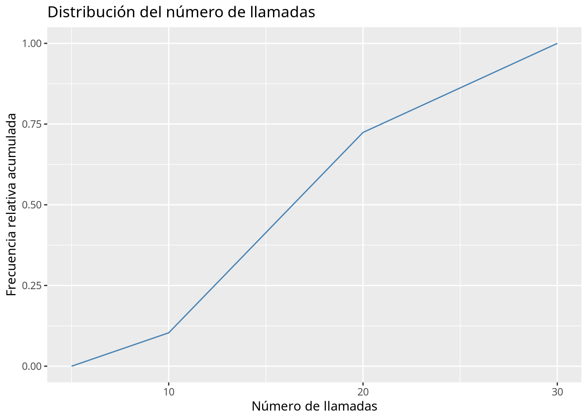

df <- data.frame(hijos = c(1, 2, 4, 2, 2, 2, 3, 2, 1, 1, 0, 2, 2, 0, 2, 2, 1, 2, 2, 3, 1, 2, 2, 1, 2))4 Distribuciones de frecuencias y representaciones gráficas
En esta práctica contiene ejercicios que muestran como hacer un resumen descriptivos de un conjunto de datos mediante la construcción de tablas de frecuencias y la representación gráfica de las mismas. En particular, se muestra cómo construir los siguientes tipos de gráficos:
- Diagramas de barras.
- Diagramas de sectores.
- Diagramas de cajas.
- Histogramas.
- Polígonos de frecuencias.
4.1 Ejercicios Resueltos
Para la realización de esta práctica se requieren los siguientes paquetes:
library(tidyverse)
# Incluye los siguientes paquetes:
# - readr: para la lectura de ficheros csv.
# - dplyr: para el preprocesamiento y manipulación de datos.
# - ggplot2: para la representación gráfica.
library(knitr) # para el formateo de tablas.Ejercicio 4.1 En una encuesta a 25 matrimonios sobre el número de hijos que tenían se obtuvieron los siguientes datos:
\[ \mbox{1, 2, 4, 2, 2, 2, 3, 2, 1, 1, 0, 2, 2, 0, 2, 2, 1, 2, 2, 3, 1, 2, 2, 1, 2} \]
-
Crear un conjunto de datos con la variable
hijos.Solución -
Construir la tabla de frecuencias.
SoluciónPara obtener las frecuencias se puede usar la función
table, y para las frecuencias relativas la funciónprop.tableambas del paquetebasede R.library(knitr) # Frecuencias absolutas. ni <- table(df$hijos) # Frecuencias relativas fi <- prop.table(ni) # Frecuencias acumuladas. Ni <- cumsum(ni) # Frecuencias relativas acumuladas. Fi <- cumsum(fi) # Creación de un data frame con las frecuencias. tabla_frec <- cbind(ni, fi, Ni, Fi) kable(tabla_frec)ni fi Ni Fi 0 2 0.08 2 0.08 1 6 0.24 8 0.32 2 14 0.56 22 0.88 3 2 0.08 24 0.96 4 1 0.04 25 1.00 -
Dibujar el diagrama de barras de las frecuencias absolutas, relativas, absolutas acumuladas y relativas acumuladas.
SoluciónCon la función
barplotdel paquetegraphics.# Diagrama de barras de frecuencias absolutas. barplot(ni, col = "steelblue", main="Distribución del número de hijos", xlab="Hijos", ylab="Frecuencia absoluta")# Diagrama de barras de frecuencias relativas. barplot(fi, col = "steelblue", main="Distribución del número de hijos", xlab="Hijos", ylab="Frecuencia relativa")# Diagrama de barras de frecuencias absolutas acumuladas. barplot(Ni, col = "steelblue", main="Distribución acumulada del número de hijos", xlab="Hijos", ylab="Frecuencia absoluta acumulada")# Diagrama de barras de frecuencias relativas acumuladas. barplot(Fi, col = "steelblue", main="Distribución acumulada del número de hijos", xlab="Hijos", ylab="Frecuencia relativa acumulada")Con la función
geom_bardel paqueteggplot2detidyverse.# Diagarma de barras de frecuencias absolutas ggplot(df, aes(x = hijos)) + geom_bar(fill = "steelblue") + labs(title = "Distribución del número de hijos", y = "Frecuencia absoluta")# Diagarma de barras de frecuencias relativas ggplot(df, aes(x = hijos)) + geom_bar(aes(y = after_stat(count/sum(count))), fill = "steelblue") + labs(title = "Distribución del número de hijos", y = "Frecuencia relativa")# Diagarma de barras de frecuencias acumuladas ggplot(df, aes(x = hijos)) + geom_bar(aes(y = after_stat(cumsum(count))), fill = "steelblue") + labs(title = "Distribución acumulada del número de hijos", y = "Frecuencia absoluta acumulada")# Diagarma de barras de frecuencias acumuladas ggplot(df, aes(x = hijos)) + geom_bar(aes(y = after_stat(cumsum(count)/sum(count))), fill = "steelblue") + labs(title = "Distribución acumulada del número de hijos", y = "Frecuencia relativa acumulada") -
Dibujar el polígono de frecuencias relativas.
Ejercicio 4.2 En un servicio de atención al cliente se han registrado el número de llamadas de clientes cada día del mes de noviembre, obteniendo los siguientes datos:
\[ \begin{array}{c} \mbox{15, 23, 12, 10, 28, 50, 12, 17, 20, 21, 18, 13, 11, 12, 26} \\ \mbox{30, 6, 16, 19, 22, 14, 17, 21, 28, 9, 16, 13, 11, 16, 20} \end{array} \]
-
Crear un conjunto de datos con la variable
llamadas.Solucióndf <- data.frame(llamadas = c(15, 23, 12, 10, 28, 50, 12, 17, 20, 21, 18, 13, 11, 12, 26, 30, 6, 16, 19, 22, 14, 17, 21, 28, 9, 16, 13, 11, 16, 20)) -
Dibujar el diagrama de cajas. ¿Existe algún dato atípico? En el caso de que exista, eliminarlo y proceder con los siguientes apartados.
SoluciónCon la función
boxplotdel paquetegraphics.# Frecuencias relativas. boxplot(df$llamadas, col = "steelblue", main="Distribución del número de llamadas", horizontal = T, xlab="Número de llamadas")Con la función la función
geom_boxplotdel paqueteggplot2detidyverse.Hay un día con 50 llamadas, que es un valor atípico en comparación con el resto de días.
Con las funciones del paquete
basede R.# Eliminación del dato atípico. df <- df[df$llamadas != 50, , drop = F]Con la función
filterdel paquetedplyrdetidyverse.df <- filter(df, llamadas != 50) -
Construir la tabla de frecuencias agrupando en 5 clases.
SoluciónPara agrupar los datos en intervalos se puede utilizar la función
cutdel paquete base de R, y para contar las frecuencias absolutas y relativas las funcionestable, yprop.tablerespectivamente.# Frecuencias absolutas. Creación automática de 5 clases con intervalos cerrados a la izquierda.library(knitr) ni <- table(cut(df$llamadas, breaks = 5, right = F)) # Creación manual de 5 clases. ni <- table(cut(df$llamadas, breaks = seq(5, 30, 5))) # Frecuencias relativas fi <- prop.table(ni) # Frecuencias acumuladas. Ni <- cumsum(ni) # Frecuencias relativas acumuladas. Fi <- cumsum(fi) # Creación de un data frame con las frecuencias. tabla_frec <- cbind(ni, fi, Ni, Fi) kable(tabla_frec)ni fi Ni Fi (5,10] 3 0.1034483 3 0.1034483 (10,15] 9 0.3103448 12 0.4137931 (15,20] 9 0.3103448 21 0.7241379 (20,25] 4 0.1379310 25 0.8620690 (25,30] 4 0.1379310 29 1.0000000 Con la fución
countdel paquetedplyrdetidyverse.library(knitr) mutate(df, llamadas_int = cut(llamadas, breaks = seq(5, 30, 5))) |> count(llamadas_int) |> mutate(fi = n/sum(n), Ni = cumsum(n), Fi = cumsum(n)/sum(n)) |> kable()llamadas_int n fi Ni Fi (5,10] 3 0.1034483 3 0.1034483 (10,15] 9 0.3103448 12 0.4137931 (15,20] 9 0.3103448 21 0.7241379 (20,25] 4 0.1379310 25 0.8620690 (25,30] 4 0.1379310 29 1.0000000 -
Dibujar el histograma de frecuencias absolutas, relativas, absolutas acumuladas y relativas acumuladas correspondiente a la tabla anterior.
SoluciónCon la función
histdel paquetegraphics.# Histograma de frecuencias absolutas. histo <- hist(df$llamadas, breaks = seq(5, 30, 5), col = "steelblue", main="Distribución del número de llamadas", xlab="Llamadas", ylab="Frecuencia absoluta")ni <- histo$counts # Histograma de frecuencias relativas. histo$counts <- ni/sum(ni) plot(histo, col = "steelblue", main="Distribución del número de llamadas", xlab="Llamadas", ylab="Frecuencia relativa")# Histograma de frecuencias absolutas acumuladas. histo$counts <- cumsum(ni) plot(histo, col = "steelblue", main="Distribución acumulada del número de llamadas", xlab="Llamadas", ylab="Frecuencia absoluta acumulada")# Histograma de frecuencias relativas acumuladas. histo$counts <- cumsum(ni)/sum(ni) plot(histo, col = "steelblue", main="Distribución acumulada del número de llamadas", xlab="Llamadas", ylab="Frecuencia relativa acumulada", )Con la función la función
geom_histogramdel paqueteggplot2detidyverse.# Histograma de frecuencias absolutas ggplot(df, aes(x = llamadas)) + geom_histogram(breaks = seq(5, 30, 5), fill = "steelblue", col = "white") + labs(title = "Distribución del número de llamadas", x = "Número de llamadas", y = "Frecuencia absoluta")# Histograma de frecuencias relativas ggplot(df, aes(x = llamadas)) + geom_histogram(aes(y = after_stat(count/sum(count))), breaks = seq(5, 30, 5), fill = "steelblue", col = "white") + labs(title = "Distribución del número de llamadas", x = "Número de llamadas", y = "Frecuencia relativa")# Histograma de frecuencias acumuladas ggplot(df, aes(x = llamadas)) + geom_histogram(aes(y = after_stat(cumsum(count))), breaks = seq(5, 30, 5), fill = "steelblue", col = "white") + labs(title = "Distribución acumulada del número de llamadas", x = "Número de llamadas", y = "Frecuencia absoluta acumulada")# Histograma de frecuencias relativas acumuladas ggplot(df, aes(x = llamadas)) + geom_histogram(aes(y = after_stat(cumsum(count)/sum(count))), breaks = seq(5, 30, 5), fill = "steelblue", col = "white") + labs(title = "Distribución acumulada del número de llamadas", x = "Número de llamadas", y = "Frecuencia relativa acumulada") -
Dibujar el polígono de frecuencias relativas acumuladas (ojiva).
SoluciónCon la función
plotdel paquetegraphics.Con la función
geom_linedel paqueteggplot2detidyverse.library(ggplot2) # Ojiva cortes <- seq(5, 30, 5) tabla_frec <- mutate(df, llamadas_int = cut(df$llamadas, breaks = cortes)) |> count(llamadas_int) |> mutate(cortes = cortes[-1], Fi = cumsum(n)/sum(n)) |> select(cortes, Fi) tabla_frec <- rbind(data.frame(cortes = cortes[1], Fi = 0), tabla_frec) ggplot(tabla_frec, aes(x = cortes , y = Fi)) + geom_line(col = "steelblue") + labs(title = "Distribución del número de llamadas", x = "Número de llamadas", y = "Frecuencia relativa acumulada")
Ejercicio 4.3 Los grupos sanguíneos de una muestra de 30 personas son:
\[\begin{array}{c} \mbox{A, B, B, A, AB, 0, 0, A, B, B, A, A, A, A, AB, A, A, A, B, 0, B, B, B, A, A, A, 0, A, AB, 0} \end{array}\]-
Crear un conjunto de datos con la variable
grupo_sanguíneo.Solucióndf <- data.frame(grupo_sanguineo = c("A", "B", "B", "A", "AB", "0", "0", "A", "B", "B", "A", "A", "A", "A", "AB", "A", "A", "A", "B", "0", "B", "B", "B", "A", "A", "A", "0", "A", "AB", "0")) -
Construir la tabla de frecuencias.
SoluciónPara obtener las frecuencias absolutas se puede usar la función
table, y para las frecuencias relativas la funciónprop.tableambas del paquete base de R. -
Dibujar el diagrama de sectores.
SoluciónCon la función
piedel paquetegraphics.
Ejercicio 4.4 En un estudio de población se tomó una muestra de 27 personas, y se les preguntó por su edad y estado civil, obteniendo los siguientes resultados:
| Estado civil | Edad |
|---|---|
| Soltero | 31, 45, 35, 65, 21, 38, 62, 22, 31 |
| Casado | 62, 39, 62, 59, 21, 62 |
| Viudo | 80, 68, 65, 40, 78, 69, 75 |
| Divorciado | 31, 65, 59, 49, 65 |
-
Crear un conjunto de datos con la variables
estado_civilyedad.Solucióndf <- data.frame( edad = c(31, 45, 35, 65, 21, 38, 62, 22, 31, 62, 39, 62, 59, 21, 62, 80, 68, 65, 40, 78, 69, 75, 31, 65, 59, 49, 65), estado_civil = rep(c("Soltero", "Casado", "Viudo", "Divorciado"), c(9, 6, 7, 5))) -
Calcular los tamaños muestrales según
estado_civil. -
Construir la tabla de frecuencias de la variable
edadpara cada categoría de la variableestado_civil.SoluciónCon la función la función
group-bydel paquetedplyrdetidyverse.library(knitr) mutate(df, edad_int = cut(edad, breaks = seq(20, 80, 10))) |> group_by(estado_civil) |> count(edad_int) |> mutate(fi = n/sum(n), Ni = cumsum(n), Fi = cumsum(n)/sum(n)) |> kable()estado_civil edad_int n fi Ni Fi Casado (20,30] 1 0.1666667 1 0.1666667 Casado (30,40] 1 0.1666667 2 0.3333333 Casado (50,60] 1 0.1666667 3 0.5000000 Casado (60,70] 3 0.5000000 6 1.0000000 Divorciado (30,40] 1 0.2000000 1 0.2000000 Divorciado (40,50] 1 0.2000000 2 0.4000000 Divorciado (50,60] 1 0.2000000 3 0.6000000 Divorciado (60,70] 2 0.4000000 5 1.0000000 Soltero (20,30] 2 0.2222222 2 0.2222222 Soltero (30,40] 4 0.4444444 6 0.6666667 Soltero (40,50] 1 0.1111111 7 0.7777778 Soltero (60,70] 2 0.2222222 9 1.0000000 Viudo (30,40] 1 0.1428571 1 0.1428571 Viudo (60,70] 3 0.4285714 4 0.5714286 Viudo (70,80] 3 0.4285714 7 1.0000000 -
Dibujar los diagramas de cajas de la edad según el estado civil. ¿Existen datos atípicos? ¿En qué grupo hay mayor dispersión?
Soluciónggplot(df, aes(x = edad, fill = estado_civil)) + geom_boxplot() -
Dibujar los histogramas de la edad según el estado civil.
SoluciónCon la función
geom_histogramdel paqueteggplot2detidyverse.ggplot(df, aes(x = edad, fill = estado_civil)) + geom_histogram(breaks = seq(20, 80, 10), position = "identity", alpha=0.4)Para dibujar cada histograma por separado se puede usar la función
facet_wrapofacet_griddel paqueteggplot2detidyverse.ggplot(df, aes(x = edad, fill = estado_civil)) + geom_histogram(breaks = seq(20, 80, 10)) + # Añadir la faceta del estado civil facet_grid(rows = vars(estado_civil))
4.2 Ejercicios propuestos
Ejercicio 4.5 El conjunto de datos neonatos contiene información sobre una muestra de 320 recién nacidos en un hospital durante un año que cumplieron el tiempo normal de gestación.
Construir la tabla de frecuencias de la puntuación Apgar al minuto de nacer. Si se considera que una puntuación Apgar de 3 o menos indica que el neonato está deprimido, ¿qué porcentaje de niños está deprimido en la muestra?
Comparar las distribuciones de frecuencias de las puntuaciones Apgar al minuto de nacer según si la madre es mayor o menor de 20 años. ¿En qué grupo hay más neonatos deprimidos?
Construir la tabla de frecuencias para el peso de los neonatos, agrupando en clases de amplitud \(0.5\) desde el \(2\) hasta el \(4.5\). ¿En qué intervalo de peso hay más neonatos?
Comparar la distribución de frecuencias relativas del peso de los neonatos según si la madre fuma o no. Si se considera como peso bajo un peso menor de \(2.5\) kg, ¿En qué grupo hay un mayor porcentaje de niños con peso bajo?
Construir el diagrama de barras de la puntuación Apgar al minuto. ¿Qué puntuación Apgar es la más frecuente?
Construir el diagrama de frecuencias relativas acumuladas de la puntuación Apgar al minuto. ¿Por debajo de que puntuación estarán la mitad de los niños?
Comparar mediante diagramas de barras de frecuencias relativas las distribuciones de las puntuaciones Apgar al minuto según si la madre ha fumado o no durante el embarazo. ¿Qué se puede concluir?
Construir el histograma de pesos, agrupando en clases de amplitud \(0.5\) desde el \(2\) hasta el \(4.5\). ¿En qué intervalo de peso hay más niños?
Comparar la distribución de frecuencias relativas del peso de los neonatos según si la madre fuma o no. ¿En qué grupo se aprecia menor peso de los niños de la muestra?
Comparar la distribución de frecuencias relativas del peso de los neonatos según si la madre fumaba o no antes del embarazo. ¿Qué se puede concluir?
Construir el diagrama de caja y bigotes del peso. ¿Entre qué valores se considera que el peso de un neonato es normal? ¿Existen datos atípicos?
Comparar el diagrama de cajas y bigotes del peso, según si la madre fumó o no durante el embarazo y si era mayor o no de 20 años. ¿En qué grupo el peso tiene más dispersión central? ¿En qué grupo pesan menos los niños de la muestra?
Comparar el diagrama de cajas de la puntuación Apgar al minuto y a los cinco minutos. ¿En qué variable hay más dispersión central?